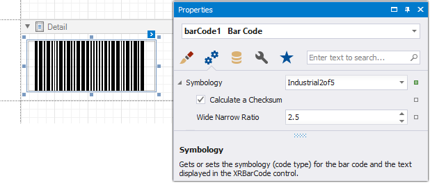

Industrial 2 of 5
Industrial 2 of 5 is a low-density numerical barcode that is used in the photofinishing and warehouse sorting industries, as well as to sequentially number airline tickets.

Add the Barcode to a Report
Drag the Barcode item from the report controls toolbox tab and drop it onto the report.

Set the control’s Symbology property to Industrial2of5.

Specify common barcode properties and properties specific to Industrial2of5.
Specific Properties
In the property grid, expand the Symbology list and specify the following properties specific to Industrial 2 of 5:
Calculate a Checksum
Specifies whether to calculate a checksum for the barcode.
Wide Narrow Ratio
Specifies the density of a barcode's bars.